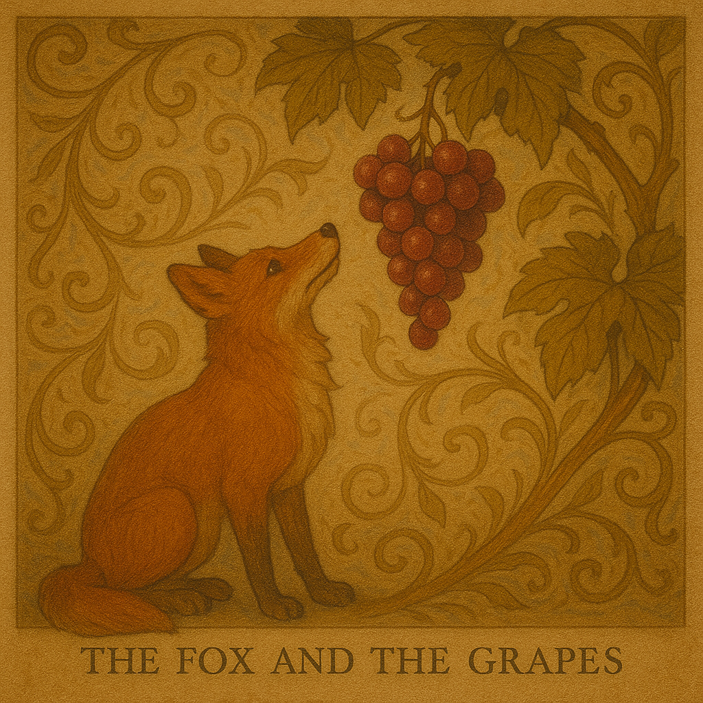

A Raposa e as Uvas
Uma raposa esfomeada avistou um belo parreiral com uvas maduras e suculentas.
Tentou alcançá-las dando pulos e mais pulos, mas estavam altas demais.
Depois de muitas tentativas fracassadas, exausta, a raposa se afastou dizendo:
— Bah! Essas uvas estão verdes mesmo. Nem queria...
Moral: “É fácil desprezar o que não se pode ter.”
Reflexão:
Quantas vezes racionalizamos uma perda dizendo que “não era pra ser”?
Essa fábula nos convida a observar quando o orgulho disfarça a frustração —
e a transformar o incômodo em aprendizado, não em desprezo.